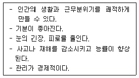

컬러리스트기사 (2010-05-09 기출문제)
1과목: 색채심리 마케팅
1. 지역색에 대한 설명으로 잘못된 것은?
- 일본의 지역색은 회색과 진한 브라운색이다.
- 랑크로(Gean-PhilippeLenclos)는 프랑스 땅의 색을 기반으로 건축물을 위한 색채 팔레트를 작성하였다.
- 건축물에 사용되는 색채는 지리적,기후적 환경과 관련 되어야 한다.
- 한 지역의 정체성을 대변하는 진정한 색채로 국가 상징색과 일치한다.
(정답률: 알수없음)

2. 소비자에 대한 심리접근법의 하나인 A10법으로 측정할 수 없는 것은?
- 의견
- 관심
- 심리
- 활동
(정답률: 알수없음)
3. 정보 및 유행색 수집을 위해 사용되며 각 기준에 따라 평가 대상들이 갖는 측정치를 찾는데 목적을 둔색채 시장조사기법은?
- 소비자 관찰법
- 사용자 조사법
- 실험법
- 다차원 척도법
(정답률: 알수없음)
4. 우리나라 사계절의 자연환경과 색에 관한 설명 중 틀린 것은?
- 봄은 노란 개나리와 분홍 진달래의 밝고 신선함과 연두색의 새 잎으로부터 느껴진다.
- 여름의 힘은 진한 녹색과 바다의 투명한 청록 그리고 타오르는 태양의 강렬함이 대비되어 더욱 강해진다.
- 가을은 산과 들의 주조색이 붉은색 또는 황토색으로 변하여 겨울의 색조와 강한 대비 효과를 이룬다.
- 겨울은 은백색의 한색계통 색조에 의해 대지의 힘이 수축되고 수동적으로 변하는 느낌이다.
(정답률: 알수없음)
5. 공사 시작 전에 보행자들의 안전을 위해 경고문을 설치하려고 한다. 진한 노란색 바탕에 ‘낙석 주의’라는 용어를 적은 경고문을 만든다고 할 때 다음 중 가장 주목성이 높은 글씨의 색은?
- 밝은 회색
- 흰색
- 하늘색
- 검정색
(정답률: 알수없음)
6. 다음 중 전통적 마케팅의 개념에서 중요하게 다루어지지 않았던 것은?
- 대량판매
- 이윤추구
- 고객만족
- 판매촉진
(정답률: 알수없음)
7. 소비자가 제품을 구매하기까지 소비자의 행동에 영향을 주는 요인이 아닌 것은?
- 사회적 요인
- 기술적 요인
- 심리적 요인
- 문화적 요인
(정답률: 알수없음)
8. 마케팅에서 고려해야 할 중요한 요인 중 하나의 하위 문화(subculture)를 가장 옳게 설명한 것은?
- 사회 안에서 가장 경제적으로 어려운 집단에서 생기는문화
- 동일 문화권 속의 구성원 중에서 비교적 공통된 생활 경험과 상황을 갖는 사람들끼리 유사한 가치관과 라이프 스타일을 갖게 되는 것
- 흑인계통 또는 백인계통에서만 볼 수 있는 문화특성
- 매스 마케팅에서 가장 초기에 시작되는 문화적 변화
(정답률: 알수없음)
9. 다음 중 착시를 설명하는 것은?
- 망막에 미치는 빛 자극의 영향에 의한 것
- 기억의 무의식적 추론에 의한 것
- 대상을 물리적 실제와 다르게 지각하는 경우
- 페흐너 효과에 의한 흑백 교차 경험
(정답률: 알수없음)
10. 다음 중 인구통계학적 자료가 마케팅에 도움을 주는 이유가 아닌 것은?
- 소비자 계층의 묘사
- 시장을 세분화할 수 있는 정보 제공
- 물가지수 정보 제공
- 소비자 라이프스타일 정보 제공
(정답률: 알수없음)
11. 포장색채로 올바르지 않은 것은?
- 민트(mint)향 초콜릿 - 녹색과 은색의 포장
- 섬세하고 에로틱한 향수 - 난색계열, 흰색, 금색의 포장 용기
- 밀크 초콜릿 - 흰색과 초콜릿색의 포장
- 바삭바삭 씹히는 맛의 초콜릿 - 밝은 핑크와 초콜릿 색의 포장
(정답률: 알수없음)
12. 다음 중 매체전략 수립 시 포함할 내용이 아닌 것은?
- 광고 목표(goal)달성을 고려한 매체의 사용계획
- 광고 컨셉(concept)을 고려한 매체 사용계획
- 광고 타겟(target)을 고려한 매체 사용계획
- 광고 크리엑티비티(creativity)효과를 고려한 매체 사용 계획
(정답률: 알수없음)
13. 마케팅 경영전략으로서의 시각적 통일화작업을 통해 기업의 성격이나 이념을 홍보하는 것은?
- MD(Merchandising)
- CC(CorporateCulture)
- CI(CorporateIdentity)
- VP(VisualPoint)
(정답률: 알수없음)
14. 기업이 적극적인 마케팅 믹스로 활용할 수 있는 가장 기본적인 요소인 4P에 해당하지 않는 것은?
- 제품(Product)
- 위치(Positioning)
- 판매촉진(Promotion)
- 유통구조(Place)
(정답률: 알수없음)
15. 색이 나타내는 연상적인 이미지나 색의 상징성에 대한 지식을 적용하지 않는 분야는?
- 색채치료
- 색채심리
- 색채마케팅
- 색채의 과학적 원리
(정답률: 알수없음)
16. 색채 조사 분석방법의 예가 아닌 것은?
- CMS법
- 면접법
- 연상법
- SD법
(정답률: 알수없음)
17. 미용성형을 주로하고 있는 새로운 첨단전문기술을 홍보하려 고 한다. 가장 효율적인 매체는?
- 텔레비전
- 라디오
- 옥외광고
- 잡지
(정답률: 알수없음)
18. 다음은 주로 무엇에 관한 효과인가?

- 색채혼색
- 색채심리
- 색채대비
- 색채조절
(정답률: 알수없음)
19. 장시간 머무는 시외버스 대합실 등에 지루함을 덜기에 적합한 색으로 가장 좋은 것은?
- 파란색 계열
- 노란색 계열
- 녹색 계열
- 갈색 계열
(정답률: 알수없음)
20. 색채 감성 조사 분석에서 널리 사용되는 분석법으로 옳은 단어 배열은?
- 귀여운 - 점잖은
- 아름다운 - 시원한
- 커다란 - 슬픈
- 맑은 - 늙은
(정답률: 알수없음)
2과목: 색채디자인
21. 풍토적, 토속적, 고미술의, 민속적인 디자인을 위한 방법이 아닌 것은?
- 버너큘러 디자인(VernacularDesign)
- 에스닉 스타일(EthnicStyle)
- 엔틱 디자인(AntiqueDesign)
- 어메니티 디자인(AmenityDesign)
(정답률: 알수없음)
22. 구성적 균형에 따른 그루핑의 유형으로 틀린 것은?
- 대칭적 균형
- 모호한 균형
- 폐쇠적 균형
- 중립적 균형
(정답률: 알수없음)
23. 신데렐라 콤플렉스, 피터팬 신드롬, 파랑새 증후군 등의 유추발상을 기초로 하며,문제의 관점을 다르게 하여 연상되는 점을 찾아내는 아이디어 발상법은?
- 고든법
- 시네틱스법
- 브레인스토밍
- 연상법
(정답률: 알수없음)
24. 색채의 적용과 디자인의 연결이 타당하지 않은 것은?
- 빨강 - 위험 표지판에 적용
- 파랑 - 혁명적 포스터에 적용
- 녹색 - 친환경적 디자인에 적용
- 노랑 - 경고, 주의표지에 적용
(정답률: 알수없음)
25. 정원에서 꽃을 볼 때 같은 모양의 꽃이라도 가까이 모여있는 꽃들이 따로 떨어져 있는 꽃보다 눈에 잘 띄는 성질은?
- 폐쇠성
- 근접성
- 지속성
- 유사성
(정답률: 알수없음)
26. 다음 중 학교시설의 색채계획의 연결로 가장 적합하지 않은것은?
- 간이식당 - 복숭아색, 호박색
- 체육관 - 연노랑, 베이지색
- 강당 - 장미색, 다갈색
- 도서관 - 황갈색, 산호색
(정답률: 알수없음)
27. 국제 유행색 협회(InternationalCommissionforFashionand TextileColors)에 대한 설명이 틀린 것은?
- 1963년에 설립되었다.
- 3년 후의 색채 방향을 분석하고 제안한다.
- 봄/여름, 가을/겨울의 두 분기로 유행색을 예측 제안한다.
- 매년 1월과 7월말에 협의회를 개최한다.
(정답률: 알수없음)
28. 화면구도를 결정짓는 가장 중요한 기본 원리는?
- 기능과 용도
- 질감과 색채
- 통일과 변화
- 명암과 색채
(정답률: 알수없음)
29. 공간에서의 색채계획으로 적절하지 않은 것은?
- 보조색은 면적의 비례에서 5~10%를 차지한다.
- 장기체류의 공간은 색채배색이 두드러지지 않아야 한다.
- 색의 사용은 천장 - 벽 - 바닥의 순으로 어두워져야 한다.
- 디자인 분야별로 주조색의 선정방법은 다를 수 있다.
(정답률: 알수없음)
30. 브레인스토밍 발상법의 규칙으로 틀린 것은?
- 일단 제출된 아이디어는 절대 비판하지 않는다.
- 모든 아이디어를 자유스럽게 제출한다.
- 이미 제출된 아이디어를 조합하여 발전시킨다.
- 아이디어는 양보다 질이 우선이다.
(정답률: 알수없음)
31. 시대와 사회적 요구에 따라 조금씩 달라지고 있는 디자인의 조건에 관한 설명으로 틀린 것은?
- 산업혁명 이전에는 가격과 기능에 관계없이 예술품과 공예품을 중심으로 심미성이 가장 중요시되었다.
- 소품종 다량생산 시대인 산업혁명 이후에는 심미성과 경제성이 중요시 되었다.
- 현대에는 다품종 소량생산의 시대로 들어서면서 심미성과 독창성이 강조되고 있다.
- 최근에는 인간의 본성에 호소하는 유희성도 조건의 하나로 등장하여 확산되고 있다.
(정답률: 알수없음)
32. 심볼과 기호를 통하여 정보를 전달하며,커뮤니케이션의 역할이 가장 큰 디자인은?
- 시각디자인
- 제품디자인
- 환경디자인
- 패션디자인
(정답률: 알수없음)
33. 1960년대 인간의 시지각 원리에 근거를 둔 추상적, 기계적 또는 시각적 환영과 이의 심리적 효과를 연구하는 시조는?
- 옵 아트(OpArt)
- 팝 아트(PopArt)
- 포스트 모던(Post-Modern)
- 구성주의(Constructivism)
(정답률: 알수없음)
34. 다음의 각 사조에서 사용된 색채에 대한 설명 중 옳은 것은?
- 아르누보 - 환하고 연한 파스텔 계통의 부드러운 색조 및 섬세한 분위기 연출
- 다다이즘 - 어둡고 무거운 톤의 색채가 주가 됨
- 드 스틸 - 낡은 듯한 느낌의 어둡고 칙칙한 색조 및 무채색의 사용
- 미래주의 - 검정, 하양, 빨강, 노랑, 파랑 등의 강한 원색대비를 사용
(정답률: 알수없음)
35. 좋은 디자인의 조건 중 여러 대(代)를 거치면서 형태의 세련과 사용상의 개선이 이루어져 생태계에 유기적으로 적응하는 인간 중심의 디자인 전통으로 나타나게 되는 것을 무엇이라고 하는가?
- 친자연성
- 문화성
- 전통성
- 지역성
(정답률: 알수없음)
36. ‘마찰하다’의 뜻으로 일명 탁본이라고 하며,요철이 있는 표면을 문질러 피사물의 질감효과를 나타내는 기법은?
- 프로타주
- 데칼코마니
- 콜라주
- 오브제
(정답률: 알수없음)
37. 패션 색채계획을 위한 정보 분석의 주된 내용이 아닌 것은?
- 시장정보
- 소비자정보
- 유행정보
- 제작정보
(정답률: 알수없음)
38. 인쇄물에서 핀트가 잘 맞지 않았을 때 일어나는 눈의 아름거림 현상은?
- 나선
- 모아레
- 패턴
- 착시
(정답률: 60%)
39. 디자인의 조건 중 심미성에 대한 설명으로 옳은 것은?
- 심미성은 합목적성과 같은 조건이다.
- 심미성을 성립시키는 미의식은 합리적인 것이다.
- 심미성은 개인차가 없다.
- 심미성을 결정하는 것은 미의식이다.
(정답률: 알수없음)
40. 다음 스케치 종류 중 가장 정밀한 것은?
- 섬네일 스케치
- 스크레치 스케치
- 러프 스케치
- 스타일 스케치
(정답률: 알수없음)
3과목: 색채관리
41. 24비트 컬러모니터의 경우 구현할 수 있는 최대 색채는?
- 24*24*24
- 128*128*128
- 256*256*256
- 512*512*512
(정답률: 알수없음)
42. 색채품질관리 규정으로 사용되지 않는 기호는?
- WI
- MI
- YI
- BI
(정답률: 알수없음)
43. 색채 입력 디바이스인 디지털 카메라, 비디오 카메라, 스캐너 등의 가장 기본이 되는 반도체 소자의 일종인 전하결합 소자는?
- CGM(colorgamutmapping)
- CT(cotone)
- CCD(chargecoupleddevice)
- AD변환기(analoguetodigitalconverter)
(정답률: 알수없음)
44. 육안검색의 경우 고채도의 색채에서 점점 구분이 엄격해지는 것은 색채의 어떤 속성 때문인가?
- 색상
- 명도
- 채도
- 톤
(정답률: 알수없음)
45. 한국산업표준에서 규정하고 있는 육안검색의 물체색이 되는 대상물과 관찰자와의 측정각은?
- 45도
- 90도
- 60도
- 35도
(정답률: 60%)
46. 어떤 색채가 매체,주변색,조도의 조건변화 등에 따라 다르게 보여지는 색의 속성을 정확히 예측해 주어 문제점을 해결할 수 있도록 개발된 색채이론(model)은?
- 디바이스 특성화(DeviceCharacterization)
- 아이소머리즘(Isomerism)
- 컬러어피어런스(ColorApperance)
- 컬러디퍼런스(ColorDifference)
(정답률: 알수없음)
47. 영상입력장치의 모든 색채는 RGB좌표로 표현되는데 이 좌표의 특징을 옳게 설명한 것은?
- 해당 입력장치의 특성에 좌우되는 색채 값으로 객관성이 없다.
- 모든 영상입력장치의 공통적인 좌표로 호환성이 있다.
- RGB좌표의 동일한 값을 갖는 색채는 입력장치에 관계없이 같은 색채이다.
- RGB좌표는 CMYK좌표로 직접 변환시킬 수 있다.
(정답률: 알수없음)
48. 다음의 어떤 것을 측정하면 물체의 색채를 가장 정확하게 계산할 수 있는가
- 물체의 시감 반사율
- 물체의 분광 흡수율
- 물체의 분광 반사율
- 물체의 시감 투과율
(정답률: 알수없음)
49. 정육점에서 본 고기의 색이 집에 가져와서 보면 다르게 느껴지는 현상은?
- 연색성의 변화
- 색음현상
- 메타머리즘 현상
- 색의 향상성
(정답률: 50%)
50. 조건등색지수(MI)를 구하려 한다. 2개의 시료가 기준광으로 조명 되었을 때 완전히 같은 색이 아닐 경우 보정 방법은?
- 기준광으로 조명되었을 E0의 삼자극치(Xr1,Yr1,Zr1)를 보정한다.
- 시험광(t)으로 조명되었을 때의 삼자극치(Xt2,Yt2,Zt2)를 보정한다.
- 기준광(r)과 시험광(t)으로 조명되었을 때의 각각의 삼자극치를 모두 보정한다.
- 보정은 필요 없고,MI만 기록한다.
(정답률: 알수없음)
51. 육안검색시의 유의사항에 대한 설명으로 틀린 것은?
- 비교하는 색의 면적이 같아지도록 마스크를 사용한다.
- 환경색에 영향을 받지 않아야 한다.
- 가능하면 마스크는 비교하는 색의 채도에 가깝게 해야한다.
- 비교하는 색읜 인접해서 배열하되,동일 평면으로 배열한다.
(정답률: 알수없음)
52. 분광식 색채계의 설명으로 옳은 것은?
- 색필터의 광측정기로 이루어지는 세 개의 광검출기로 삼자극치값을 직접 측정한다.
- 측정이 간편하고 구조가 간단하여 비교적 저렴한 장비들로 구성된다.
- 현장에서의 색채관리,이동형 색채계 등으로 많이 활용되고 있다.
- 보다 정밀한 색채의 측정이 필요한 자동배색장치의 색측정장치로 사용된다.
(정답률: 알수없음)
53. 다음 중 염료의 분류로 바른 것은?
- 천연염료, 광물염료, 합성염료, 식용염료
- 동물염료, 식용염료, 합성염료, 형광염료
- 천연염료, 식용염료, 형광염료, 합성염료
- 식물염료, 천연염료, 식용염료, 합성염료
(정답률: 알수없음)
54. 다음 중 빛의 일반적인 설명으로 틀린 것은?
- 빛의 스펙트럼으로 색상별 색온도는 일정하다.
- 빛은 반사, 굴절, 간섭, 산란의 성질이 있다.
- 빛은 파동과 전자기파의 성질을 가지고 있다.
- 빛은 파장에 따라 적외선, 가시광선, 자외선, X-선 등으로 나뉜다.
(정답률: 알수없음)
55. 조색 방법에 대한 설명으로 틀린 것은?
- 고명도 색채 조색시 극히 소량으로도 색채에 많은 영향을 줄 수 있으므로 유의하여야 한다.
- 메탈릭이나 펄의 입자가 함유된 조색에는 금속입자나 펄입자에 따라 표면반사가 일정하지 못하다.
- 형광성이 있는 색채 조색시 분광분포가 유사한 Xe(크세논)램프로 조명하여 측정한다.
- 시감으로 비교할 때는 시감의 판단력 변화가 발생되므로 장시간 비교 판단되어야 한다.
(정답률: 알수없음)
56. 다음 중 CIE삼자극값의 Y값과 CIELAB의 L*값과의 관계 를 가장 잘 설명한 것은?
- 둘 다 밝기를 나타내는 좌표값으로 서로 비례한다.
- 둘 다 밝기를 나타내는 값이지만, L*값은 Y의 제곱에 비례한다.
- 둘 다 밝기를 나타내는 값이지만, L*값은 Y의 세제곱에 비례한다.
- 둘 다 밝기를 나타내는 값이지만, Y값은 L의 세제곱에 비례한다.
(정답률: 알수없음)
57. 다음 중 디지털 색체 관리 시스템으로서의 디바이스 특성화(DeviceCharacterization)라고 볼 수 없는 것은?
- 디지털 색채 영상 입력 디바이스의 특성화
- 모니터의 특성화
- 디지털 dising){색채 소프트웨어의 특성화
- 컬러 프린터의 특성화
(정답률: 알수없음)
58. 꽃의 자연스러운 색을 연출하기 위한 광원은?
- 적색 광원
- 전구색 광원
- 온백색 광원
- 주광색 광원
(정답률: 알수없음)
59. 다음 중 아이소머리즘(Isomerism)에 대한 설명으로 옳은 것은?
- 분광반사율이 달라도 같은 색자극을 일으키는 현상을 말하며 주로 육안조색시 발생한다.
- 일반적으로 육안으로 조색하는 경우 나타나는 현상으로 관측자마다 색이 달라져 보인다.
- 광원이 바뀌면 색이 달라져 보이는 현상이다.
- 무조건 등색이라고도 한다.
(정답률: 알수없음)
60. 다음 중 형광을 포함한 분광반사율을 측정하는 방법이 아닌 것은?
- 다중각 측정법
- 필터 감소법
- 이중 모드법
- 이중 모노크로메이터법
(정답률: 알수없음)
4과목: 색채지각론
61. 무대조명과 같이 두 개 이상의 색광을 동시에 겹쳐 합성된 결과를 지각하게 하는 방법은?
- 동시가법혼색
- 동시계시혼색
- 동시감법혼색
- 동시병치혼색
(정답률: 알수없음)
62. 푸르킨예 현상과 관련이 없는 것은?
- 간상체 시작과 추상체 시각의 스펙트럼 민감도가 서로 다르기 때문이다.
- 어두운 곳에서는 빨간색의 물체보다도 파란색의 물체가 더 잘 보인다.
- 간상체가 단파장 빛에 민감하기 때문에 생기는 현상이다.
- 간상체의 시각이 망막의 위치마다 민감도가 다르기 때문에 생기는 현상이다.
(정답률: 알수없음)
63. 색들끼리 서로 영향을 주어서 인접색에 가까운 것으로 느껴 지는 현상과 관계없는 것은?
- 베졸드효과
- 동시대비
- 줄눈효과
- 동화현상
(정답률: 알수없음)
64. 다음 중 장시간 머무는 대합실 등에 가장 적합한 색은?
- 진출색
- 단파장의 색
- 저명도의 색
- 고채도의 색
(정답률: 알수없음)
65. 차선을 표시하는 노란색을 밝은 회색의 시멘트 도로 위에 도색하면 시인성이 현저히 떨어진다. 이 표시의 시인성을 향상시키기 위한 가장 효과적인 방법은?
- 차선표시 주변에 같은 채도의 보색으로 파란색을 칠한다.
- 차선표시 주변에 검은 색을 칠한다.
- 노란색 도료에 형광제를 첨가시킨다.
- 재귀반사율이 높아지도록 작은 유리 구슬을 뿌린다.
(정답률: 알수없음)
66. 다음 중 캔버스 위에 원색물감을 혼합하지 않고 작은 점을 찍어서 그리는 인상파의 점묘법 사용시 나타나는 색의 혼합과 관련이 있는 것은?
- 색광혼합
- 색료혼합
- 중간혼합
- 감산혼합
(정답률: 알수없음)
67. 노란색 바나나의 경우 가시광선의 여러 파장 중에서 어떤 파장의 빛들을 주로 흡수하는가?
- 400nm~500nm
- 500nm~600nm
- 600nm~700nm
- 700nm~800nm
(정답률: 알수없음)
68. 다음 중 화물이나 가방의 무게감을 덜 느끼게 하는 색으로 가장 효과적인 것은?
- 고명도,고채도인 한색계열의 색
- 저명도,고채도인 난색계열의 색
- 저명도,저채도인 한색계열의 색
- 고명도,저채도인 난색계열의 색
(정답률: 알수없음)
69. 명소시와 암소시의 중간 정도의 밝기에서 추상체와 간상체 모두 활동하고 있는 시각상태는?
- 잔상시
- 유도시
- 중간시
- 박명시
(정답률: 알수없음)
70. 조명조건이나 관찰조건이 변해도 물체의 색을 동일하게 지각하는 현상은?
- 연색성
- 항상성
- 색순응
- 색지각
(정답률: 알수없음)
71. 색채의 감정적인 효과에서 온도감에 주로 영향을 받는 요소는?
- 색상
- 채도
- 명도
- 면적
(정답률: 알수없음)
72. 한 개의 원색에 흰색을 섞어서 단계를 낼 경우, 중간에 색상이 변하는 것을 볼 수 있다. 이와 관계된 것은?
- 베졸트 효과
- 애브니 효과
- 벤함 효과
- 줄눈 효과
(정답률: 알수없음)
73. 건물의 도색이나 벽지를 선정할 때,색채 샘플에서 보여지는 명도나 채도를 실제 보다 낮추어 고려하는 것은 무엇때문인가?
- 색상 대비
- 동화 현상
- 면적 효과
- 착시 효과
(정답률: 알수없음)
74. 그래픽 프로그램을 이용하여 빨간 사과를 그린 후, 프린터로 출력하였다. 그 결과 잉크 부족으로 사과가 주황색으로 프린트 되었다. 어떤 잉크를 교체해야 하는가?
- cyan
- magenta
- yellow
- black
(정답률: 알수없음)
75. 색의 차이를 변별하는 수단이 될 수 없는 것은?
- 색의 맑고 탁한 정도
- 색의 밝고 어두운 정도
- 색이 차지하는 면적
- 반사되는 주파장의 종류
(정답률: 알수없음)
76. 빨간 망 속의 귤은 그렇지 않은 귤보다 더 붉게 보인다. 이러한 현상과 관련이 없는 것은?
- 인접한 색이 서로 영향을 주어서 인접색에 가까운 것으로 느껴진다.
- 바탕에 비해 도형이 작고 촘촘하면 더 나타나기 쉽다.
- 명도와 채도 차이가 클수록 현저하다.
- 이 현상은 관찰거리에 영향을 받는다.
(정답률: 알수없음)
77. 청록색의 채도를 가장 높여 선명한 이미지를 주고 싶다면 배경색은 어떤 색을 선택하면 좋은가?
- 빨간색
- 노란색
- 파란색
- 회색
(정답률: 알수없음)
78. 감법혼합이든 가법혼합이든 각각의 3원색에서 서로 인접한 두 색을 동일하게 혼합하여 만드는 새로운 색은?
- 보색
- 중간색
- 원색
- 혼합색
(정답률: 알수없음)
79. 다음 중 평면색(FilmColor)에 대한 설명으로 틀린 것은?
- 평면색은 면색이라고도 하며,손수색의 감각을 가능하게 한다.
- 평면색은 c2색거리감이나,입체감 등은 거의 지각되지 않는다.
- 평면색은 작은 구멍을 통해서 볼 수 있는 색과 같은 것을 말한다.
- 평면색은 색의 구체적인 지각표면이 고려된 색이다.
(정답률: 알수없음)
80. 음성적 잔상으로 보이는 색은 원래의 색과 어떤 관계의 색이 보이게 되는가?
- 보색
- 유사색상
- 동일색상
- 기억색
(정답률: 알수없음)
5과목: 색채체계론
81. 1916년에 발표된 오스트발트 표색계의 바탕이 된 색지각설은?
- 하트리지(H.Hartridge)의 다색설
- 영ㆍ헬름홀쯔(Young-Helmholtz)의 3원색설
- 헤링(E.Hering)의 반대색설
- 돈더스(F.Donders)의 단계설
(정답률: 알수없음)
82. 다음 중 한국산업표준에서 기본색명에 해당하는 색상이 아닌 것은?
- 회색
- 주홍
- 분홍
- 자주
(정답률: 알수없음)
83. 오스트발트 시스템의 등가색환 관계로 짝지어진 것은?
- 5ed-5gc
- 2ec-2ea
- 2ca-5ca
- aa-ac
(정답률: 알수없음)
84. 다음 중 가장 채도가 낮은 색명은?
- 장미색
- 와인레드
- 베이비핑크
- 카민
(정답률: 알수없음)
85. 먼셀의 균형 이론을 설명한 것으로 옳은 것은?
- 저울을 이용하여 원리를 설명했다.
- 오스트발트 조화론에 영향을 주었다.
- 색상의 균형의 중심점이다.
- 난색과 한색의 비율이 균형의 핵심이다.
(정답률: 알수없음)
86. PCCS의 톤 분류 명칭의 연결이 틀린 것은?
- 밝은 -bright
- 엷은 -pale
- 해맑은 -vivid
- 어두운 -dull
(정답률: 알수없음)
87. PCCS색체계의 톤(tone)분류 체계의 설명으로 옳은 것은?
- 무채색 고명도 순은 sf(soft)-p(pale)-g(grayish)이다.
- 고채도순은 v(vivid)-s(strong)-lt(light)-p(pale)이다.
- 중채도의 톤으로 lt(light),b(bright), s(strong), dp(deep)등이 있다.
- 고채도의 v(vivid)톤은 색명에 따른 명도차이가 거의 없다.
(정답률: 알수없음)
88. 조선시대 단청색 중 빨강 계열에 속하는 색명은?
- 삼청
- 장단
- 뇌록
- 하엽
(정답률: 알수없음)
89. 파버 비렌(F.Birren)이 제시한 색채조화의 원리는?
- 색삼각형의 연속된 성상에 위치한 색들은 그 색들에 포함된 순색의 양이 같아서 조화롭다.
- 오스트발트 이론에 기초하여 명도를 자연 연쇄법칙에서 도입하였다.
- 순색,하양,검정을 1차 요소로,tint/gray/shade를 2차 요소로 한 색삼각형을 활용한다.
- 1차 요소로 순색, 하양, 회색, 검정으로 하고, 2차 요소로 명색조, 암색조를 요소로 한 조화론이다.
(정답률: 알수없음)
90. CIEYxz표색계에서 내부의 프랭클린 궤적선은 무엇의 변화를 나타내는가?
- 색온도
- 스펙트럼
- 반사율
- 무채색도
(정답률: 30%)
91. 한국산업표준(KS)에서 규정하고 있는 계통색명 체계에 대한 설명으로 맞는 것은?
- 색이름 수식형은 빨간,노란,파란 등의 3종류로 제한한다.
- 필요시 2개의 수식 형용사를 결합하거나 부사 ‘아주’를 수식 형용사 앞에 붙여 사용할 수 있다.
- 기본 색명 뒤에 색의 3속성에 따른 수식어를 이어 붙여 표현한다.
- 유채색의 기본 색명은 빨강,노랑,녹색,파랑,보라 5색이다.
(정답률: 알수없음)
92. 오스트발트 표색계의 등색상 삼각형에 대한 설명 중 틀린 것은?
- 감각량은 자극량의 대수에 비례한다.
- 무채색축의 혼합량은 등차급수적으로 변화된다.
- 이론적으로 순색량,백색량,흑색량에 의해 색이 만들어 진다.
- 이상적인 순색은 수치대로는 되지 않는다.
(정답률: 알수없음)
93. 가법혼색의 원리는 어떤 법칙에 근거하는가?
- 유클리드 기하
- 그라스만의 법칙
- 베졸트 효과
- 애브니 효과
(정답률: 알수없음)
94. 다음 중 먼셀의 색채 조화 원리에 대한 내용으로 거리가 먼것은?
- 명도는 같고,채도가 다른 보색대비에서 고채도에 작은 면적을 주면 조화된다.
- 채도가 같고,명도가 다른 보색대비에서 회색척도에 관하여 정연한 간격으로 했을 때 조화롭다.
- 평균명도가 N5가 될 때 조화롭다.
- 자연계와 같이 사람들에게 잘 알려진 색은 조화한다.
(정답률: 46%)
95. 다음 중 각 색표계의 특징을 옳게 설명한 것은?
- CIEL*a*b*색표계는 객관성을 유지할 수 있으며, 세밀한 측색과 관리 및 조색이 가능하다.
- 먼셀 표색계는 눈으로 확인하고 조색표를 만들어야 하므로 색표집이 필요 없다.
- CIEL*u*v*는 삼원색 감산 혼합방법에 기초한 CIEXYZ체계가 물리학적으로 변형된 것이다.
- PCCS는 오스트발트 체계에 톤을 적용하여 간략하게 표현한 것이므로 대표적인 현색계이다.
(정답률: 알수없음)
96. 문ㆍ스펜서 색채 조화론의 미도를 계산하기 위해 필요한 값이 아닌 것은?
- 밸런스 포인트(Balancepoint)
- 미적 계수(AestheticFactor)
- 질서성의 요소(ElementofOrder)
- 복잡성의 요소(ElementofComplexity)
(정답률: 10%)
97. 다음 중 모세스 해리스(MosesHarris)의 색채표준과 관계된 것이 아닌 것은?
- 기준 3원색의 빛을 분광하여 표준화를 시도 하였다.
- 오늘날의 감법혼색과 원리가 같다.
- Red,Yellow,Blue의 삼원색을 기본으로 한다.
- 중간 혼합색과 원색의 관계를 그림으로 성립할 수 있도록 하였다.
(정답률: 알수없음)
98. 먼셀 체계의 채도속성에 관한 것으로 옳은 것은?
- 각 색상마다 최고 채도치가 다르다. 특히 녹색계열의 채도가 높다.
- 노란색(Y)은 명도도 높고 채도 단위도 높다.
- 표기 방법으로 ‘6/’ 로 간략하게도 표기한다.
- CIE에 의하여 국제적으로 삼자극치 전환 계산이 공식화 되었다.
(정답률: 알수없음)
99. 우리나라 전통색에서 소색(消色)에 대한 설명 중 틀린 것은?
- 염색을 하지 않은 무명이나 삼베 고유의 색을 의미 한다.
- 색이 없는 개념으로 본래 그대로의 색 의미를 갖는다.
- 종교에서의 수백,순백 등과는 색채가 다르다.
- 가을을 소추(素秋)라고 부르기도 했다.
(정답률: 알수없음)
100. 파버 비렌의 조화론에서 가장 대비가 강한 조화 유형은?
- white - tint - color
- white - tone - shade
- white - color - black
- white - gray - black
(정답률: 알수없음)